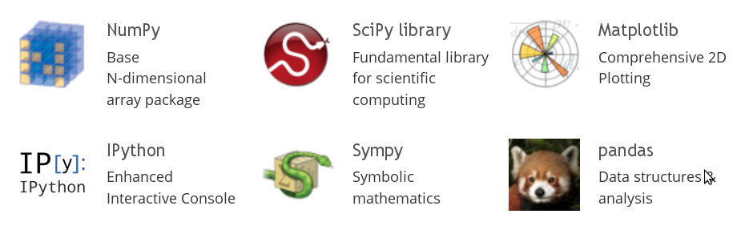

This is part of Python for Geosciences notes.
================
Core scientific packages¶
When people say that they do their scientific computations in Python it's only half true. Python is a construction set, similar to MITgcm or other models. Without packages it's only a core, that although very powerful, does not seems to be able to do much by itself.
There is a set of packages, that almost every scientist would need:

We are going to talk about all exept Sympy
IPython and pylab¶
In order to be productive you need comfortable environment, and this is what IPython provide. It was started as enhanced python interactive shell, but with time become architecture for interactive computing.
Starting IPython with --pylab option loads some necessary modules (NumPy for data array support and Matplotlib for plotting support), that make it similar to Matlab console.
In order to use latest version of IPython on zmaw computers one has to load appropriate module:
module load python/2.7-ve2
and then
ipython --pylab
On Ubuntu or other Debian-based distributions something like this will set you up for the rest of the course:
sudo apt-get install ipython-notebook python-matplotlib python-scipy python-pandas python-sympy python-mpltoolkits.basemap netcdf-bin cdoIPython notebook¶
Since the 0.12 release, IPython provides a new rich text web interface - IPython notebook. Here you can combine:
Code execution¶
print('I love Python')
Text (Markdown)¶
$\LaTeX$ equations¶
Plots¶
x = [1,2,3,4,5]
plot(x)
![](data:image/png;base64,iVBORw0KGgoAAAANSUhEUgAAAXcAAAEACAYAAABI5zaHAAAABHNCSVQICAgIfAhkiAAAAAlwSFlz
AAALEgAACxIB0t1+/AAAGOBJREFUeJzt3X9MVff9x/HXMZi0FwyWZGAjJDXCJvgDLmt2/6DWS13X
yCqxqWl0mzKryZVmGk36j/tntBqTfhlpNC4GF2PCmowl/jPmrlaXeemUMNYOu2WQCI3Ee9GRGUOr
nUZ+nO8fTsqVC/dwOffec+59PhIS4J7e++6n9uPTD/d6DdM0TQEAMsqidA8AALAfmzsAZCA2dwDI
QGzuAJCB2NwBIAOxuQNABrK0ub/wwgtat26dvF6vvve978W8Zv/+/SorK1NlZaV6e3ttHRIAMD85
Vi4yDEOhUEgFBQUxbw8GgxocHNTAwID++te/qrGxUd3d3bYOCgCwzvKxzFyvdero6FBDQ4Mkyefz
aXR0VCMjIwufDgCQEEubu2EY+v73v68XX3xRv/71r2fcPjw8rJKSkqmvi4uLFYlE7JsSADAvlo5l
rl69queff17/+c9/9Oqrr2rVqlVav3591DVPl71hGPZNCQCYF0ub+/PPPy9J+ta3vqU33nhDPT09
UZv78uXLFQ6Hp76ORCJavnx51H2Ulpbqiy++sGNmAMgaK1eu1ODg4Lz/ubjHMv/973917949SdLX
X3+tixcvau3atVHX1NfXq62tTZLU3d2tpUuXqqioKOqaL774QqZpOv7jF7/4RdpnYE5mZM7snLOv
z5TPZ+qVV0zduPH4e4lGcdxyHxkZ0RtvvCFJGh8f149//GP94Ac/UGtrqyQpEAiorq5OwWBQpaWl
ys3N1ZkzZxIaBgCy0cSE1NIiNTdLhw9LgYC00JPtuJv7ihUrdO3atRnfDwQCUV+fOHFiYZMAQBbq
75d27ZJyc6W//U164QV77pdXqD7F7/enewRLmNM+bphRYk67pXvOiQnp//5Pevll6ac/lf70J/s2
dkkyTNNMyZt1GIahFD0UADja9Fo/fXruTT3RvZNyB4AUSXatT2fpqZAAgIVJ1tn6bCh3AEiiVNb6
dJQ7ACRJqmt9OsodAGyWrlqfjnIHABuls9ano9wBwAZOqPXpKHcAWCCn1Pp0lDsAJMhptT4d5Q4A
CXBirU9HuQPAPDi51qej3AHAIqfX+nSUOwDE4ZZan45yB4A5uKnWp6PcASAGN9b6dJQ7ADzFrbU+
HeUOAP/j9lqfztLmPjExIa/Xq82bN8+4LRQKKT8/X16vV16vV0eOHLF9SABItv5+qaZG+vjjx7W+
d+/C36Q6nSwdyxw7dkwVFRW6d+9ezNs3bNigjo4OWwcDgFSYmJBaWqTmZunwYSkQcPem/kTcco9E
IgoGg9qzZ8+s7+PHe6MCcKNMq/Xp4m7uBw8eVHNzsxYtin2pYRjq6upSZWWl6urq1NfXZ/uQAGCn
TDpbn82cxzLnzp1TYWGhvF6vQqFQzGuqq6sVDofl8Xh0/vx5bdmyRdevX0/GrACwYJnwTBgr5tzc
u7q61NHRoWAwqIcPH+qrr77Szp071dbWNnXNkiVLpj7ftGmT3nnnHd29e1cFBQUz7q+pqWnqc7/f
L7/fv/B/AwCwYPrZ+vvvPz5bn+VAIq1CodCsMT0fhmnxwLyzs1O//OUv9Yc//CHq+yMjIyosLJRh
GOrp6dFbb72loaGhmQ9kGJzNA0iL6bV++rS7aj3RvXNeL2Iy/veThtbWVklSIBDQ2bNndfLkSeXk
5Mjj8ai9vX3eQwBAMril1pPBcrkv+IEodwAp5OZany7RvTNLfg8DkC2mPxOmoUG6dMm9G/tC8HfL
AMgY2fJMGCsodwCuR63PRLkDcDVqPTbKHYArUetzo9wBuA61Hh/lDsA1qHXrKHcArkCtzw/lDsDR
qPXEUO4AHItaTxzlDsBxqPWFo9wBOAq1bg/KHYAjUOv2otwBpB21bj/KHUDaUOvJQ7kDSAtqPbko
dwApRa2nBuUOIGWo9dSh3AEkHbWeepY294mJCXm9Xm3evDnm7fv371dZWZkqKyvV29tr64AA3K2/
X6qpkT7++HGtNzZmz5tUp5OlJT527JgqKipkGMaM24LBoAYHBzUwMKBTp06psbHR9iEBuA+1nl5x
N/dIJKJgMKg9e/bEfAfujo4ONTQ0SJJ8Pp9GR0c1MjJi/6QAXINaT7+4y33w4EE1Nzdr0Sz/ZYaH
h1VSUjL1dXFxsSKRiH0TAnANat055ny2zLlz51RYWCiv16tQKDTrdU8XfazjG0lqamqa+tzv98vv
91seFICz8UwYe4RCoTn3W6sMM9ZZy//8/Oc/129+8xvl5OTo4cOH+uqrr/Tmm2+qra1t6pq9e/fK
7/dr27ZtkqRVq1aps7NTRUVF0Q9kGDGPdQC428SE1NIiNTdL778vBQIcwdgp0b1zzv8ER48eVTgc
1o0bN9Te3q5XXnklamOXpPr6+qnvdXd3a+nSpTM2dgCZibN155rXi5ieHLe0trZKkgKBgOrq6hQM
BlVaWqrc3FydOXPG/ikBOAq17nxzHsvY+kAcywAZYfrZ+unTnK0nW1KOZQDgCZ4J4y783TIA4uKZ
MO5DuQOYFbXuXpQ7gJiodXej3AFEodYzA+UOYAq1njkodwDUegai3IEsR61nJsodyFLUemaj3IEs
RK1nPsodyCLUevag3IEsQa1nF8odyHDUenai3IEMRq1nL8odyEDUOih3IMNQ65AodyBjUOuYjnIH
MgC1jqdR7oCLUeuYTdzN/eHDh/L5fKqqqlJFRYUOHTo045pQKKT8/Hx5vV55vV4dOXIkKcMC+EZ/
v1RTI3388eNab2zkTarxjbjHMs8884wuX74sj8ej8fFxvfTSS7py5YpeeumlqOs2bNigjo6OpA0K
4LGJCamlRWpult5/XwoE2NQxk6Uzd4/HI0l69OiRJiYmVFBQMOOaRN6dG8D8cLYOqyz9fj85Oamq
qioVFRWptrZWFRUVUbcbhqGuri5VVlaqrq5OfX19SRkWyFacrWO+LJX7okWLdO3aNX355Zd67bXX
FAqF5Pf7p26vrq5WOByWx+PR+fPntWXLFl2/fn3G/TQ1NU197vf7o+4DQGzUenYJhUIKhUILvh/D
nOd5yuHDh/Xss8/q3XffnfWaFStW6LPPPos6vjEMg6MbYB44W4eU+N4Z95fKnTt3NDo6Kkl68OCB
Ll26JK/XG3XNyMjI1IP39PTINM2Y5/IArOGZMFiouMcyt2/fVkNDgyYnJzU5OakdO3Zo48aNam1t
lSQFAgGdPXtWJ0+eVE5Ojjwej9rb25M+OJCJqHXYZd7HMgk/EMcywJymn62fPs3ZOh5L2rEMgOTi
mTBIBv5uGSCNeCYMkoVyB9KAWkeyUe5AilHrSAXKHUgRah2pRLkDKUCtI9UodyCJqHWkC+UOJAm1
jnSi3AGbUetwAsodsBG1Dqeg3AEbUOtwGsodWCBqHU5EuQMJotbhZJQ7kABqHU5HuQPzQK3DLSh3
wCJqHW5CuQNxUOtwI8odmAO1Drei3IEYqHW43Zyb+8OHD+Xz+VRVVaWKigodOnQo5nX79+9XWVmZ
Kisr1dvbm5RBgVTp75dqaqSPP35c642NvEk13GfOX7LPPPOMLl++rGvXrukf//iHLl++rCtXrkRd
EwwGNTg4qIGBAZ06dUqNjY1JHRhIFmodmSTumbvH45EkPXr0SBMTEyooKIi6vaOjQw0NDZIkn8+n
0dFRjYyMqKioKAnjAsnB2ToyTdw/bE5OTqqqqkpFRUWqra1VRUVF1O3Dw8MqKSmZ+rq4uFiRSMT+
SYEkoNaRqeKW+6JFi3Tt2jV9+eWXeu211xQKheT3+6OuMU0z6mvDMGLeV1NT09Tnfr9/xv0AqfSk
1j0eqadHWrEi3RMBUigUUigUWvD9GObTO/McDh8+rGeffVbvvvvu1Pf27t0rv9+vbdu2SZJWrVql
zs7OGccyhmHM+E0ASIeJCamlRWpult5/XwoE+IEpnCvRvXPOX9J37tzR6OioJOnBgwe6dOmSvF5v
1DX19fVqa2uTJHV3d2vp0qWct8OxeCYMssWcxzK3b99WQ0ODJicnNTk5qR07dmjjxo1qbW2VJAUC
AdXV1SkYDKq0tFS5ubk6c+ZMSgYH5oNaR7aZ17HMgh6IYxmkyfRnwpw+zQ9M4S5JOZYB3IxnwiCb
8XfLICPxvHVkO8odGYVaBx6j3JExqHXgG5Q7XI9aB2ai3OFq1DoQG+UOV6LWgblR7nAdah2Ij3KH
a4yPU+uAVZQ7XKG/X/rpT6W8PGodsIJyh6ONj0sffCCtX/94c6fWAWsodzjW9Fr/9FM2dWA+KHc4
DrUOLBzlDkeh1gF7UO5wBGodsBfljrSj1gH7Ue5IG2odSB7KHWlBrQPJRbkjpah1IDXibu7hcFi1
tbVavXq11qxZo+PHj8+4JhQKKT8/X16vV16vV0eOHEnKsHC3/n6ppka6ePFxrTc28ibVQLLEPZZZ
vHixPvzwQ1VVVen+/fv67ne/q1dffVXl5eVR123YsEEdHR1JGxTuNT4utbRIzc3S4cNSIMCmDiRb
3M192bJlWrZsmSQpLy9P5eXlunXr1ozNPZF350bm42wdSI959dPQ0JB6e3vl8/mivm8Yhrq6ulRZ
Wam6ujr19fXZOiTch7N1IL0sP1vm/v372rp1q44dO6a8vLyo26qrqxUOh+XxeHT+/Hlt2bJF169f
n3EfTU1NU5/7/X75/f6EB4dzUetA4kKhkEKh0ILvxzAtnKeMjY3p9ddf16ZNm3TgwIG4d7pixQp9
9tlnKigo+OaBDIOjmwzH2Tpgv0T3zrjlbpqmdu/erYqKilk39pGRERUWFsowDPX09Mg0zaiNHZmP
WgecJe7mfvXqVX300Udat26dvF6vJOno0aO6efOmJCkQCOjs2bM6efKkcnJy5PF41N7entyp4RjU
OuBMlo5lbHkgjmUyzvRaP32aWgeSIdG9k8bCvPFMGMD5+LtlMC+crQPuQLnDEmodcBfKHXFR64D7
UO6YFbUOuBfljpiodcDdKHdEodaBzEC5Ywq1DmQOyh3UOpCBKPcs19cn7dpFrQOZhnLPUk9q/eWX
qXUgE1HuWYhaBzIf5Z5FqHUge1DuWYJaB7IL5Z7hqHUgO1HuGYxaB7IX5Z6BqHUAlHuGodYBSJR7
xqDWAUwXd3MPh8Oqra3V6tWrtWbNGh0/fjzmdfv371dZWZkqKyvV29tr+6CYXV+fVFMjXbz4uNYb
G3mTaiDbxd0CFi9erA8//FD/+te/1N3drV/96lfq7++PuiYYDGpwcFADAwM6deqUGhsbkzYwvkGt
A5hN3DP3ZcuWadmyZZKkvLw8lZeX69atWyovL5+6pqOjQw0NDZIkn8+n0dFRjYyMqKioKEljg7N1
AHOZ1x/eh4aG1NvbK5/PF/X94eFhlZSUTH1dXFysSCRiz4SIQq0DsMLys2Xu37+vrVu36tixY8rL
y5txu2maUV8bhjHjmqampqnP/X6//H6/9UkxVeu5udQ6kKlCoZBCodCC78cwn96VYxgbG9Prr7+u
TZs26cCBAzNu37t3r/x+v7Zt2yZJWrVqlTo7O6OOZQzDmPEbAKwZH5daWqTmZunwYSkQ4AemQLZI
dO+Mu0WYpqndu3eroqIi5sYuSfX19Wpra5MkdXd3a+nSpZy324RnwgBIRNxyv3Llil5++WWtW7du
6qjl6NGjunnzpiQpEAhIkn72s5/pwoULys3N1ZkzZ1RdXR39QJT7vFDrAKTE905LxzJ2YHO3bvoz
YU6f5mwdyGZJO5ZB6vBMGAB24e+WcQietw7ATpR7mlHrAJKBck8jah1AslDuaUCtA0g2yj3FqHUA
qUC5pwi1DiCVKPcUoNYBpBrlnkTUOoB0odyThFoHkE6Uu82odQBOQLnbiFoH4BSUuw2odQBOQ7kv
ELUOwIko9wRR6wCcjHJPALUOwOko93mg1gG4BeVuEbUOwE3ilvvbb7+toqIirV27NubtoVBI+fn5
8nq98nq9OnLkiO1DphO1DsCN4pb7rl27tG/fPu3cuXPWazZs2KCOjg5bB3MCah2AW8Ut9/Xr1+u5
556b85pMe+Nrah2A2y34B6qGYairq0uVlZWqq6tTX1+fHXOlTV+fVFMjXbz4uNYbG6VF/NgZgMss
eNuqrq5WOBzW559/rn379mnLli12zJVy1DqATLLgZ8ssWbJk6vNNmzbpnXfe0d27d1VQUDDj2qam
pqnP/X6//H7/Qh/eFv39jzd0ztYBpFsoFFIoFFrw/RimhQPzoaEhbd68Wf/85z9n3DYyMqLCwkIZ
hqGenh699dZbGhoamvlAhuG4s/nxcamlRWpulg4flgIBjmAAOEuie2fcct++fbs6Ozt1584dlZSU
6L333tPY2JgkKRAI6OzZszp58qRycnLk8XjU3t4+/+nTgFoHkMkslbstD+SQcqfWAbhJ0so9k1Dr
ALJFVjTrk2fCrF/PM2EAZIeML3dqHUA2ythyp9YBZLOMLHdqHUC2y6hyp9YB4LGMKXdqHQC+4fpy
p9YBYCZXlzu1DgCxubLcqXUAmJvryp1aB4D4XFPu1DoAWOeKcqfWAWB+HF3u1DoAJMax5U6tA0Di
HFfu1DoALJyjyp1aBwB7OKLcqXUAsFfay51aBwD7xS33t99+W0VFRVq7du2s1+zfv19lZWWqrKxU
b2+vpQem1gEgeeJu7rt27dKFCxdmvT0YDGpwcFADAwM6deqUGhsb4z5of79UUyNdvPi41hsbnfMm
1aFQKN0jWMKc9nHDjBJz2s0tcyYq7pa6fv16Pffcc7Pe3tHRoYaGBkmSz+fT6OioRkZGYl7rhlp3
y39w5rSPG2aUmNNubpkzUQs+cx8eHlZJScnU18XFxYpEIioqKppxbU0NZ+sAkAq2HIaYphn1tWEY
Ma9zaq0DQMYxLbhx44a5Zs2amLcFAgHzt7/97dTX3/nOd8x///vfM65buXKlKYkPPvjgg495fKxc
udLKNj3Dgo9l6uvrdeLECW3btk3d3d1aunRpzCOZwcHBhT4UAMCiuJv79u3b1dnZqTt37qikpETv
vfeexsbGJEmBQEB1dXUKBoMqLS1Vbm6uzpw5k/ShAQBzM8ynD8wBAK5n+7PLL1y4oFWrVqmsrEwf
fPBBzGsSedGT3eLNGQqFlJ+fL6/XK6/XqyNHjqR8xmS9gMxu8eZ0wlqGw2HV1tZq9erVWrNmjY4f
Px7zunSvp5U5nbCeDx8+lM/nU1VVlSoqKnTo0KGY16V7Pa3M6YT1lKSJiQl5vV5t3rw55u3zXsuE
TupnMT4+bq5cudK8ceOG+ejRI7OystLs6+uLuuaPf/yjuWnTJtM0TbO7u9v0+Xx2jmDbnJcvXzY3
b96c8tmm++STT8y///3vs/4w2wlraZrx53TCWt6+fdvs7e01TdM07927Z37729925K9NK3M6YT1N
0zS//vpr0zRNc2xszPT5fOZf/vKXqNudsJ6mGX9Op6xnS0uL+aMf/SjmLImspa3l3tPTo9LSUr3w
wgtavHixtm3bpt///vdR18znRU/JYmVOSTOe4plqdr6ALJnizSmlfy2XLVumqqoqSVJeXp7Ky8t1
69atqGucsJ5W5pTSv56S5PF4JEmPHj3SxMSECgoKom53wnpamVNK/3pGIhEFg0Ht2bMn5iyJrKWt
m3usFzQNDw/HvSYSidg5RlxW5jQMQ11dXaqsrFRdXZ36+vpSOqMVTlhLK5y2lkNDQ+rt7ZXP54v6
vtPWc7Y5nbKek5OTqqqqUlFRkWpra1VRURF1u1PWM96cTljPgwcPqrm5WYtm+XtYEllLWzf32V68
9LSnf2ey+s/ZxcrjVVdXKxwO6/PPP9e+ffu0ZcuWFEw2f+leSyuctJb379/X1q1bdezYMeXl5c24
3SnrOdecTlnPRYsW6dq1a4pEIvrkk09ivpzfCesZb850r+e5c+dUWFgor9c7558g5ruWtm7uy5cv
Vzgcnvo6HA6ruLh4zmsikYiWL19u5xhxWZlzyZIlU3+c27Rpk8bGxnT37t2UzhmPE9bSCqes5djY
mN5880395Cc/ifk/sFPWM96cTlnPJ/Lz8/XDH/5Qn376adT3nbKeT8w2Z7rXs6urSx0dHVqxYoW2
b9+uP//5z9q5c2fUNYmspa2b+4svvqiBgQENDQ3p0aNH+t3vfqf6+vqoa+rr69XW1iZJc77oKZms
zDkyMjL1O2VPT49M04x5VpdOTlhLK5ywlqZpavfu3aqoqNCBAwdiXuOE9bQypxPW886dOxodHZUk
PXjwQJcuXZLX6426xgnraWXOdK/n0aNHFQ6HdePGDbW3t+uVV16ZWrcnEllLW9+sIycnRydOnNBr
r72miYkJ7d69W+Xl5WptbZXknBc9WZnz7NmzOnnypHJycuTxeNTe3p7yOd3yArJ4czphLa9evaqP
PvpI69atm/qf++jRo7p58+bUnE5YTytzOmE9b9++rYaGBk1OTmpyclI7duzQxo0bHff/upU5nbCe
0z05blnoWvIiJgDIQA55iwwAgJ3Y3AEgA7G5A0AGYnMHgAzE5g4AGYjNHQAyEJs7AGQgNncAyED/
D9fAMA4apl2cAAAAAElFTkSuQmCC)
Rich media¶
from IPython.display import YouTubeVideo
YouTubeVideo('F4rFuIb1Ie4')
Run notebook¶
In order to start IPython notebook you have to type:
ipython notebook
but in order to work in the notebook efficiently one has to start it with pylab and inline mode, that allow inline graphics
ipython notebook --pylab inline
on ZMAW computers, where default browser is Konqueror, you might need to use:
ipython notebook --pylab inline --browser="firefox"You can download and run this lectures:¶
Web version can be accesed from the github repository.
You can download them as .zip file:
wget https://github.com/koldunovn/python_for_geosciences/archive/master.zip
Unzip:
unzip master.zip
And run:
cd python_for_geosciences-master/
ipython notebook --pylab inlineMain IPyhton features¶
Getting help¶
You can use question mark in order to get help. To execute cell you have to press Shift+Enter
?
Question mark after a function will open pager with documentation. Double question mark will show you source code of the function.
plot??
Press TAB after opening bracket in order to get help for the function (list of arguments, doc string).
sum(
Accessing the underlying operating system¶
You can access system functions by typing exclamation mark.
!pwd
If you already have some netCDF file in the directory and ncdump is installed, you can for example look at its header.
!ncdump -h test_netcdf.nc
Example of cdo use:
!cdo nyear test_netcdf.nc
Get information from OS output to the python variable
nmon = !cdo nmon test_netcdf.nc
nmon
Return information from Pyhton variable to the SHELL
!echo {nmon[1]}
Magic functions¶
The magic function system provides a series of functions which allow you to control the behavior of IPython itself, plus a lot of system-type features.
Let's create some set of numbers using range command:
range(10)
And find out how long does it take to run it with %timeit magic function:
%timeit range(10)
Print all interactive variables (similar to Matlab function):
%whos
Cell-oriented magic¶
Receive as argument both the current line where they are declared and the whole body of the cell.
%%timeit
range(10)
range(100)
Thre are several cell-oriented magic functions that allow you to run code in other languages:
%%bash
echo "My shell is:" $SHELL
echo "My memory status is:"
free
%%perl
$variable = 1;
print "The variable has the value of $variable\n";
You can write content of the cell to a file with %%writefile (or %%file for ipython < 1.0):
%%writefile hello.py
#if you use ipython < 1.0, use %%file comand
#%%file
a = 'hello world!'
print(a)
And then run it:
%run hello.py
The %run magic will run your python script and load all variables into your interactive namespace for further use.
%whos
In order to get information about all magic functions type:
%magic
Comments !